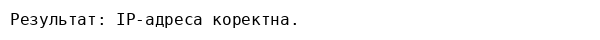

Тема роботи: Робота з формами у PHP.
Виконавець: Андрій Клим (група KN1‑B22)
Дата виконання: 25 серпня 2025 р.
Варіант: 9
Задача 1. Перевірка віку. Створити форму для введення віку, передати його методом GET та перевірити, чи користувач старший за 18 років.
Скрипт знаходиться у файлі age_check.php. Він відображає форму та, після її заповнення, видає відповідь про те, чи перевищує введений вік 18 років.
Приклад результату роботи скрипта:
Задача 2. Перевірка IP‑адреси. Розробити форму для введення IP‑адреси. Дані передаються методом POST. Після відправлення скрипт перевіряє, чи має IP коректний формат.
Скрипт знаходиться у файлі ip_check.php. Він виводить форму та, після надсилання, перевіряє правильність IP‑адреси.
Приклад результату роботи скрипта:
1. У своєму обліковому записі GitHub створіть репозиторій PHPLABS‑KLYM, якщо його ще не існує.
2. Створіть у репозиторії папку LAB05 та додайте до неї файли: age_check.php, ip_check.php, age_check_output.png, ip_check_output.png та цей звіт – index.html.
3. Посилання на цей файл index.html використовуйте як звіт у системі Moodle.